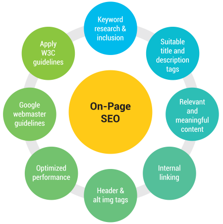

Search Engine Optimization

Onpage SEO Learning
An deep analysis and learning on onpage SEO optimizations and its techniques.
Quality Content writing
covers about each minute tips that needs to be followed while writing content for webpage.

Google Analytics
Basic knowledge and usage of google abnalytics from onpage verification to data driven.
View all Topics